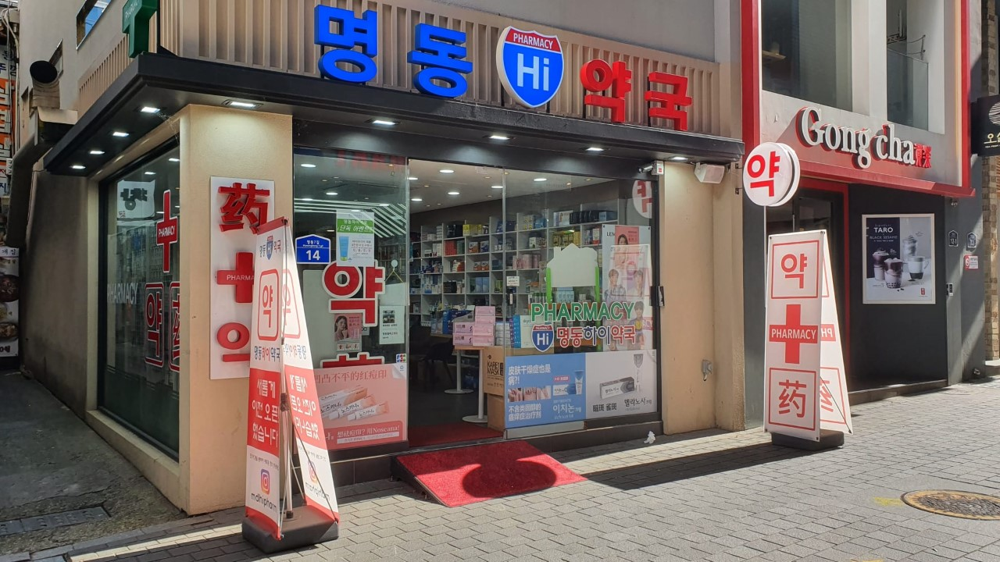
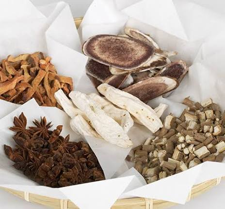

Take Care of Yourself

Last stop of Part 2! My food entry ended with the idea that a lot of Korean food is eaten for your health, so now I'm looking at health itself: how Koreans see doctors, the system that pays for it, the traditional medicine that still exists next to modern hospitals, and how people take care of their minds too. K-dramas made me curious about this. Characters are always handing each other herbal tonics or ending up in the hospital (usually after a car accident and amnesia).
The Healthcare System
South Korea has National Health Insurance: one public insurer, the National Health Insurance Service (NHIS), covers basically everyone. Here's how it got there:
- 1977Health insurance starts, but only for workers at big companies.
- 1989Coverage expands to the whole population, just 12 years later. Universal
- 2000Hundreds of separate insurance funds merge into one national insurer, the NHIS. Single insurer
- TodayKoreans have one of the highest life expectancies in the world, around 83 years.
Korean Traditional Medicine
One thing that surprised me: Korea has two kinds of licensed doctors. Along with regular medical doctors, there are Korean medicine doctors (한의사, hanuisa) who train at their own universities and work at Korean medicine clinics (한의원, hanuiwon). Some of their treatments, like acupuncture, are even covered by national insurance.
Acupuncture 침
Thin needles at specific points on the body, often used for back pain, sprains, and stress.
Herbal medicine 한약
Custom herbal remedies, often sent home in little pouches you heat up and drink.
Cupping 부항
Suction cups on the skin to improve circulation. They leave round marks for a few days.
Sasang medicine
A Korean theory from the 1800s that sorts people into four body types, each with its own best foods and treatments.
Dongui Bogam (동의보감): Korean medicine's most famous book was written by Heo Jun, a royal doctor during the Joseon dynasty, and printed in 1613. In 2009 it was added to UNESCO's Memory of the World register. One of its big ideas is that you should treat the mind before the illness. Heo Jun's life was even turned into a super popular K-drama, Hur Jun (1999).
A lot of Koreans use both. You might go to the hospital for an X-ray when you sprain your ankle, then go to a hanuiwon for acupuncture while it heals. It's not "old vs. new." It's more like having two toolboxes.

Food as Medicine
There's a Korean saying, 약식동원 (yaksik dongwon): "medicine and food come from the same source." That's why so many dishes from my last entry are tied to staying healthy.
Samgyetang in summer
On boknal, the hottest days of the year, Koreans eat hot ginseng chicken soup. The idea is 이열치열 (iyeol chiyeol), "fight heat with heat," to sweat it out and get your energy back.
Seaweed soup after birth
New moms eat miyeokguk for weeks because seaweed is full of iron and iodine. Eating it on your birthday is a way of honoring your mom.
Red ginseng
Ginseng, especially red ginseng (홍삼, hongsam), is a classic health gift for parents and grandparents.
Hangover soup
Haejangguk literally means "soup to chase a hangover." It's the go-to breakfast after a late night of soju.
Real or Myth?
Tap to find out.
Everyday Wellness
Jjimjilbang 찜질방
24-hour bathhouses with saunas, hot tubs, snacks, and sleeping mats. It's where families relax, and you have to try the towel "sheep hat" from the K-dramas.
Skincare as self-care
K-beauty treats skincare like daily health care, with sunscreen every day, lots of hydration, and multi-step routines.
Walking everywhere
With great public transit, people walk a lot more than in LA, where we drive everywhere.
Mental Health
This is the more serious side of health in Korea. The pressure I wrote about in Entry 3, with the Suneung, long work hours, and ppalli-ppalli, takes a real toll. For a long time, seeing a therapist or psychiatrist carried a stigma, and some people worried it would hurt their job or marriage prospects. Korea has also had one of the highest suicide rates among wealthy countries, which pushed the government to expand mental health services. In 2024 it launched 109, a single phone number for crisis support.
Attitudes are changing, especially among younger people, and K-pop is a big part of that. BTS's Love Yourself series, including my favorite album, Love Yourself: Tear, is all about learning to accept yourself. At their 2018 speech at the United Nations, they told young people to "speak yourself." Suga has also talked openly about his own struggles with depression in his music. Hearing idols say it's okay to not be okay matters a lot in a culture where people are expected to hold it together.
The 2024–2025 Doctors' Walkout
Korea's healthcare system was also in the news recently. In February 2024, more than 10,000 trainee doctors walked out to protest a government plan to add 2,000 medical school spots per year (up from about 3,000). The government said Korea needed more doctors, especially outside big cities. The doctors argued that more students wouldn't fix low pay and tough working conditions.
The walkout lasted about 18 months, and big hospitals had to delay surgeries. The government eventually dropped the increase, and most trainees went back to work in September 2025. It showed how much Korea's hospitals depend on young doctors working long hours, which is the same pressure-heavy work culture from Entry 3.
LA vs. Seoul: Going to the Doctor
Your insurance usually depends on your job, your school, or a plan you buy yourself. You might wait days or weeks for an appointment, and you might not know the cost until the bill shows up. Graduating soon means figuring out U.S. insurance as an adult, which is honestly intimidating.
Everyone is in the same national system. You can walk into a clinic, show your ID, and see a doctor the same day for a low copay. And if you want, there's a Korean medicine clinic down the street too.
Why?
As Korea's economy grew fast after the war, the government chose to build one national system so everyone would be covered. The U.S. built its system around employers and private insurance companies, which reflects American values of choice and the free market. Korea's system also reflects the idea of uri from Entry 5: everyone's health is a shared responsibility.
Reflection
Before this entry, I mostly knew Korean health culture from K-drama hospital scenes and skincare routines. Now I see that health in Korea mixes the newest technology with centuries-old ideas. It's normal to get an MRI and acupuncture in the same week, and to eat soup as medicine. I also realized that the same pressure that makes Korea so successful can make people sick, and that it's taken a long time, and help from people like BTS, for it to be okay to talk about that.
How a culture takes care of its body says a lot about what it values. In Korea, health is about balance, family, and looking out for each other.
That's the end of the line for Part 2! Seven stops ago, I started this journal because of a song my mom played and a YouTube rabbit hole. Now I've explored Korea's language, food, and health, and I understand the country behind the music so much better. 감사합니다 for riding along, and 건강하세요 (stay healthy)!
Sources
- Kwon, Soonman. "Thirty years of national health insurance in South Korea: lessons for achieving universal health care coverage." Health Policy and Planning, 2009. https://academic.oup.com/heapol/article/24/1/63/598886
- "Healthcare in South Korea." Wikipedia. https://en.wikipedia.org/wiki/Healthcare_in_South_Korea
- Korea.net. "What is the Dongui Bogam?" https://www.korea.net/NewsFocus/Sci-Tech/view?articleId=119136
- Al Jazeera. "South Korea trainee doctors walk out in protest against reforms." February 20, 2024. https://www.aljazeera.com/news/2024/2/20/south-koreas-trainee-doctors-walk-out-in-protest-against-reforms
- The Japan Times. "South Korean doctors end 18-month walkout in relief to hospitals." September 2, 2025. https://www.japantimes.co.jp/news/2025/09/02/asia-pacific/society/south-korean-doctors-end-walkout/